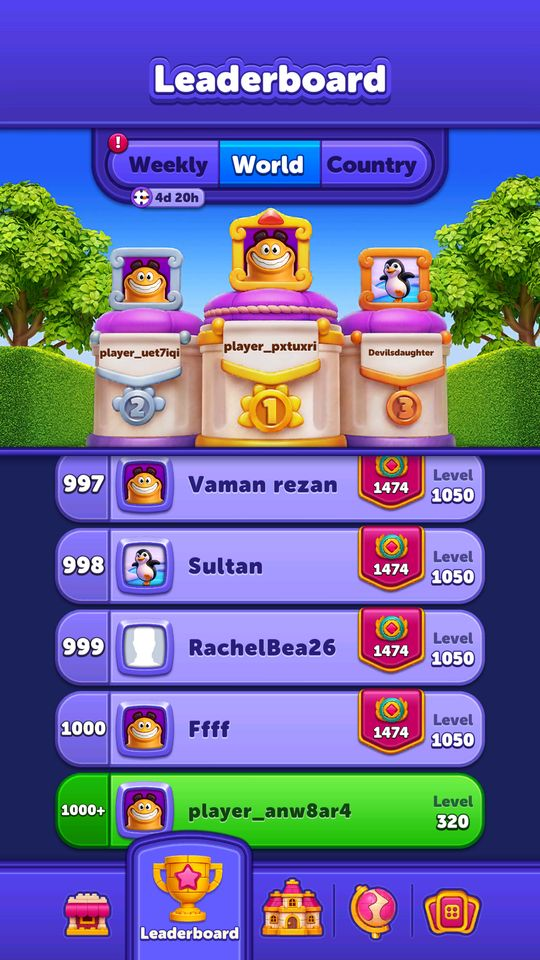
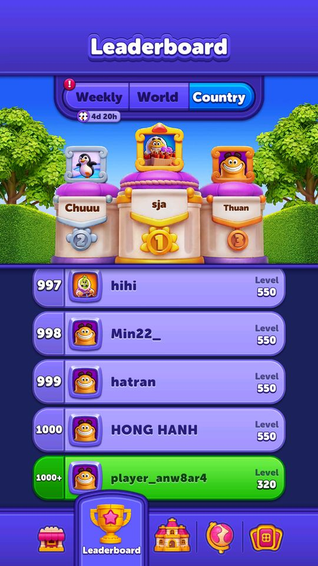

Ảnh chụp màn hình
Hai bảng xếp hạng chạy liên tục, không theo kỳ: bảng thế giới và bảng theo quốc gia, mỗi bảng 1.000 mục.
Mô tả
- Hai bảng xếp hạng chạy liên tục, không theo kỳ: bảng thế giới và bảng theo quốc gia, mỗi bảng 1.000 mục.
- Xếp theo tiến độ màn chơi (Score), có thêm ArenaScore hiển thị kèm.
- Dữ liệu được cache xuống máy nên tôi đọc được nguyên vẹn bảng thật.
Còn thiếu / chưa xác minh
Mở khóa & điểm vào
Luôn hoạt động; là ILateLoginService nên chỉ chạy sau khi đăng nhập xong.
Điểm vào:
- Tab Leaderboard ở màn Home (PageType.Leaderboard)
Cách hoạt động
- PermanentLeaderboardService là IIntervalUpdate và ILateLoginService: sau khi đăng nhập, IntervalUpdate() định kỳ gọi UpdateLeaderboard() -> PermanentLeaderboardRemoteService hỏi backend.
- Kết quả lưu qua PermanentLeaderboardDataService xuống file SaveData/leaderboard_modelV2.data và phục vụ qua GetWorldLeaderboard() / GetCountryLeaderboard().
- WorldLeaderboardController và CountryLeaderboardController hiển thị hai tab; LeaderboardController điều phối.
- Mỗi mục là một LeaderboardPlayer gồm: PublicID, Nickname, Score, ArenaScore, Rank, IsMe, ImageUrl, ImageID, FrameId, NameStyleId, TokenID — tức bảng xếp hạng cũng là nơi khoe đồ trang trí hồ sơ.
Luồng chi tiết theo code
PermanentLeaderboardService là IIntervalUpdate và ILateLoginService: sau khi đăng nhập, IntervalUpdate() định kỳ gọi UpdateLeaderboard() -> PermanentLeaderboardRemoteService hỏi backend. Kết quả lưu qua PermanentLeaderboardDataService xuống file SaveData/leaderboard_modelV2.data và phục vụ qua GetWorldLeaderboard() / GetCountryLeaderboard(). WorldLeaderboardController và CountryLeaderboardController hiển thị hai tab; LeaderboardController điều phối. Mỗi mục là một LeaderboardPlayer gồm: PublicID, Nickname, Score, ArenaScore, Rank, IsMe, ImageUrl, ImageID, FrameId, NameStyleId, TokenID — tức bảng xếp hạng cũng là nơi khoe đồ trang trí hồ sơ.
Ảnh chụp màn hình (2)
2 ảnh chụp trong game (LDPlayer, bản 1006, tài khoản thử level 320 → 350 (07/10/2026)). Bấm ảnh để phóng to; nhãn UC dẫn tới use case tương ứng.




Use case (3)
Bấm vào từng use case để mở. Mở/đóng tất cả
UC-01 Xem bảng thế giới
Các bước- GetWorldLeaderboard() trả danh sách đã cache
- WorldLeaderboardController dựng danh sách
- Mục có IsMe = true được làm nổi bật
| Actor | Player |
|---|---|
| Trigger | Mở tab Leaderboard |
| Điều kiện | Đã đăng nhập |
| Kết quả | Thấy 1.000 người dẫn đầu toàn cầu |
| Quy tắc / số liệu | Trên bản cache đọc được: 1.000 mục, điểm từ 1.000 xuống 976 — dải điểm cực hẹp vì game chỉ có 999 màn nên nhóm dẫn đầu đều đã phá đảo. Riêng 171 người cùng điểm 1.000 (kịch trần) |
| Evidence | PermanentLeaderboardService.GetWorldLeaderboard; DeviceRuntime SaveData/leaderboard_modelV2.data |
UC-02 Xem bảng quốc gia
Các bước- GetCountryLeaderboard()
- CountryLeaderboardController dựng danh sách
| Actor | Player |
|---|---|
| Trigger | Chuyển tab |
| Điều kiện | - |
| Kết quả | Bảng theo quốc gia của tài khoản |
| Quy tắc / số liệu | Bản cache đọc được có country = 'vn', 1.000 mục, điểm từ 989 xuống 550 |
| Evidence | PermanentLeaderboardService.GetCountryLeaderboard; leaderboard_modelV2.data |
UC-03 Khoe đồ trang trí trên bảng xếp hạng
Các bước- LeaderboardPlayer mang FrameId, NameStyleId, TokenID, ImageID
- ProfileSpriteService.FindLeaderboardSpriteById(id) tra ảnh tương ứng
| Actor | System |
|---|---|
| Trigger | Dựng từng dòng |
| Điều kiện | - |
| Kết quả | Người chơi thấy đồ trang trí của người khác — động lực sưu tầm |
| Quy tắc / số liệu | Trong bảng thế giới: 248/1.000 có token, 88/1.000 có khung. Giá trị hay gặp: frameId 'magic_pass_frame', tokenID 'collection_1_token' — tức đồ trang trí đến từ Block Pass và Collection |
| Evidence | LeaderboardPlayer (FrameId, NameStyleId, TokenID); ProfileSpriteService.FindLeaderboardSpriteById |
Cấu hình (3)
Gộp mọi nguồn: const trong code, JSON mặc định trong Resources, bảng static, storage key, AB test, cờ server.
| Nguồn | Key | Kiểu | Giá trị | Ý nghĩa | Nơi định nghĩa |
|---|---|---|---|---|---|
| backend model | LeaderboardPlayer | object | PublicID, Nickname, Score, ArenaScore, Rank, IsMe, ImageUrl, ImageID, FrameId, NameStyleId, TokenID | Một dòng bảng xếp hạng. Không có trường isBot — client không có cách nào biết mục nào là tài khoản ảo | dump.cs class LeaderboardPlayer (TypeDefIndex 1625) |
| server info | Quan sát trên bảng thế giới (1.000 mục) | table | điểm 1.000→976; 171 người kịch trần 1.000; 272/1.000 còn dùng nickname mặc định dạng player_<7 ký tự đầu của id>; 151 người có ArenaScore > 0 (cao nhất 70); 248 có token, 88 có khung; không ai có imageUrl | Số liệu thật lấy từ cache trên máy | DeviceRuntime/decoded/leaderboard.json |
| server info | Quan sát trên bảng quốc gia (vn, 1.000 mục) | table | điểm 989→550; 693/1.000 mục cùng đúng điểm 550; ArenaScore của toàn bộ 1.000 mục đều bằng 0; chỉ 1 người có khung, 22 người có token; tên hiển thị gồm cả tiếng Nga, Hàn, Nhật lẫn tiếng Việt | Phần đuôi bảng bị làm phẳng ở mốc 550 | DeviceRuntime/decoded/leaderboard.json |
Backend / server
| Command | Chiều | Mục đích |
|---|---|---|
get permanent leaderboard | client→server | lấy hai bảng, cache xuống SaveData/leaderboard_modelV2.data |
Giao diện (UI)
| Element | Class | Mục đích |
|---|---|---|
| Tab thế giới | Modules.Contexts.Home.PermanentLeaderboard.Scripts.WorldLeaderboardController | bảng toàn cầu |
| Tab quốc gia | Modules.Contexts.Home.PermanentLeaderboard.Scripts.CountryLeaderboardController | bảng theo nước |
Storage keys
SaveData/leaderboard_modelV2.data (339 KB, 2.000 mục)
Chưa đọc được / ghi chú
- Không kết luận được bảng này có tài khoản ảo hay không. Lớp LeaderboardPlayer không có trường isBot; trong toàn bộ Assembly-CSharp chỉ đúng một lớp có trường đó là JetpackRaceWithStageResponseUserModel. Vì vậy mọi nhận định về bot ở bảng thường trực đều không có bằng chứng từ client.
- Cụm 693 mục cùng điểm 550 ở bảng quốc gia, tất cả đều ArenaScore = 0 và gần như không có đồ trang trí, là một quan sát đáng ghi nhận — nhưng có thể giải thích bằng việc server làm phẳng phần đuôi bảng, không nhất thiết là tài khoản ảo.
- Bảng 'vn' chứa nhiều tên tiếng Nga, Hàn, Nhật — chưa rõ quốc gia được gán theo cách nào (IP, ngôn ngữ máy, hay khai báo).
- Chu kỳ làm mới bảng (IntervalUpdate) chưa đọc được giá trị cụ thể.
Tính năng liên quan
Hồ sơ người chơi Masters Arena (giải đấu theo bộ màn riêng) Streak Tournament (giải đấu chuỗi thắng 24 giờ) Weekly Tournament (giải tuần)
Nguồn đã đọc
- PseudoC/.../Home/PermanentLeaderboard/Scripts/PermanentLeaderboardService.c
- dump.cs (class LeaderboardPlayer)
- DeviceRuntime/decoded/leaderboard.json